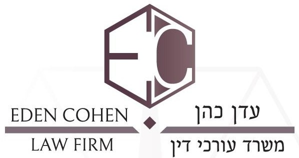

משרד עורכי דין · טירת כרמל
עדן כהןEden Cohen עורך דין תעבורהA traffic lawyer
דוחות, משרד הרישוי, המכון הרפואי לבטיחות בדרכים וייפוי כוח מתמשך. הרצל 6, קומה 2.Traffic tickets, the Licensing Office, the Medical Institute for Road Safety, and lasting powers of attorney. 6 Herzl St, 2nd floor.
5.0בגוגל · 39 ביקורותon Google · 39 reviews
כשהדו״ח כבר בידייםWhen the ticket is already in your hands
עדן כהן מטפל בדוחות תנועה, בעבירות נהיגה ובהליכים מול משרד הרישוי.Eden Cohen handles traffic tickets, driving offences and proceedings with the Licensing Office.
במה המשרד עוסקWhat the office handles
תחומי העיסוק, כפי שהמשרד מציג אותם.The practice areas, as the office lists them.
- תעבורהTraffic
דוחות תנועהTraffic tickets
- תעבורהTraffic
דוחות מהירות מופרזתSpeeding tickets
- תעבורהTraffic
נהיגה בשכרותDrunk driving
- תעבורהTraffic
נהיגה תחת השפעת סמיםDriving under the influence of drugs
- תעבורהTraffic
משרד הרישויThe Licensing Office
- תעבורהTraffic
המכון הרפואי לבטיחות בדרכיםThe Medical Institute for Road Safety
- תעבורהTraffic
תאונות דרכיםRoad accidents
- ייפוי כוחAttorney
ייפוי כוח מתמשךLasting power of attorney
מוסמך מטעם משרד המשפטיםAuthorised by the Ministry of Justice
מי ילווה אתכםWho you’ll work with
עו״ד עדן כהן, משרד עורכי דין ברחוב הרצל בטירת כרמל. מוסמך מטעם משרד המשפטים לעריכת ייפוי כוח מתמשך.Adv. Eden Cohen, a law office on Herzl Street in Tirat Carmel. Authorised by the Ministry of Justice to draw up lasting powers of attorney.
״הסביר הכל בהרבה סובלנות.״“He explained everything with a lot of patience.”
שי לי, ביקורת בגוגלShay Li, Google review (translated from Hebrew)
כתבו לעדן כמה מיליםWrite Eden a few words
- בוחרים נושאPick a subject
- מוסיפים פרטים, אם רוציםAdd details, if you like
- שולחים בוואטסאפSend it on WhatsApp
מה אומרים הלקוחותWhat clients say
Translated from Hebrew
עבדתי עם הרבה עורכי דין במהלך חיי,למשרד של עדן הגעתי דרך המלצה של חבר. חייב להגיד שהוא באמת מקצוען. היה זמין תמיד וליווה אותי לאורך כל הדרך,הסביר הכל בהרבה סובלנות. והכי חשוב - הביא לי את התוצאה הרצויה במשפט. אני בהחלט מרוצה. תודה לך עדן על הכל!I’ve worked with many lawyers in my life; I came to Eden’s office through a friend’s recommendation. I have to say he’s a real professional. He was always available and stayed with me the whole way, explaining everything with a lot of patience. And most importantly, he got me the result I wanted at trial. I’m definitely satisfied. Thank you, Eden, for everything!
שי ליShay Liעורך דין מקצועי, ישר והגון. עושה את עבודתו על הצד הטוב ביותר תוך ליווי צמוד ומתן מענה לכל שאלה וזמינות תמידית. ממליצה מאוד!!A professional, honest and decent lawyer. Does his work as well as it can be done, with close support, an answer to every question and constant availability. Highly recommended!!
קוראל כהןKoral Cohenאלוף, ביטל לי דו״ח עם נקודות על טלפון פחות מחודש שהייתי לחוץ שיא ! אלף פעם תודה אחי ממליץ ! ! !Champ, he got my phone ticket with points cancelled in less than a month, when I was extremely stressed! A thousand thanks, bro, I recommend him!!!
ברק דואקBarak Doak
השתמשתי בשירותיו ואין ספק שבזכותו קיבלתי את מבוקשתי. שירות מעולה ,זמינות וסבלנות. תודה רבה,עלה והצלח.I used his services and there’s no doubt that thanks to him I got what I asked for. Excellent service, availability and patience. Thank you very much, all the best.
Orel BarazaniOrel Barazaniרוצה להמליץ בחום על עדן התותח נתן לי פתרון לבעיה במחיר הוגן בזמן שכולם דיברו על רעיונות ופנטזיות לא מהעולם הזה תודה רבה לךI want to warmly recommend Eden, the ace. He gave me a solution to my problem at a fair price while everyone else talked about ideas and fantasies out of this world. Thank you very much
Tamir BazelTamir Bazel
שאלות קצרותShort questions
באילו תחומים המשרד עוסק?Which areas does the office handle?
דוחות תנועה, דוחות מהירות מופרזת, נהיגה בשכרות, נהיגה תחת השפעת סמים, משרד הרישוי, המכון הרפואי לבטיחות בדרכים ותאונות דרכים. וגם עריכת ייפוי כוח מתמשך.Traffic tickets, speeding tickets, drunk driving, driving under the influence of drugs, the Licensing Office, the Medical Institute for Road Safety and road accidents. Also lasting powers of attorney.
מהו ייפוי כוח מתמשך?What is a lasting power of attorney?
מסמך שבו אדם קובע מראש מי יפעל בשמו אם יום אחד לא יוכל להחליט בעצמו. עורך אותו עורך דין שהוסמך לכך מטעם משרד המשפטים, ועו״ד עדן כהן מוסמך לכך.A document in which a person decides in advance who will act for them if one day they can no longer decide for themselves. It is drawn up by a lawyer authorised for this by the Ministry of Justice, and Adv. Eden Cohen is authorised.
איפה המשרד?Where is the office?
רחוב הרצל 6, קומה 2, טירת כרמל. לדואר: ת.ד. 111.6 Herzl St, 2nd floor, Tirat Carmel. Mail: P.O. Box 111.
איך פונים?How do I get in touch?
בטלפון או בוואטסאפ 054-757-0276, או במייל edenc.lawoffice@gmail.com.By phone or WhatsApp on 054-757-0276, or by email at edenc.lawoffice@gmail.com.
הרצל 6, קומה 26 Herzl St, 2nd floor
הרצל 6, קומה 2, טירת כרמל6 Herzl St, 2nd floor, Tirat Carmel